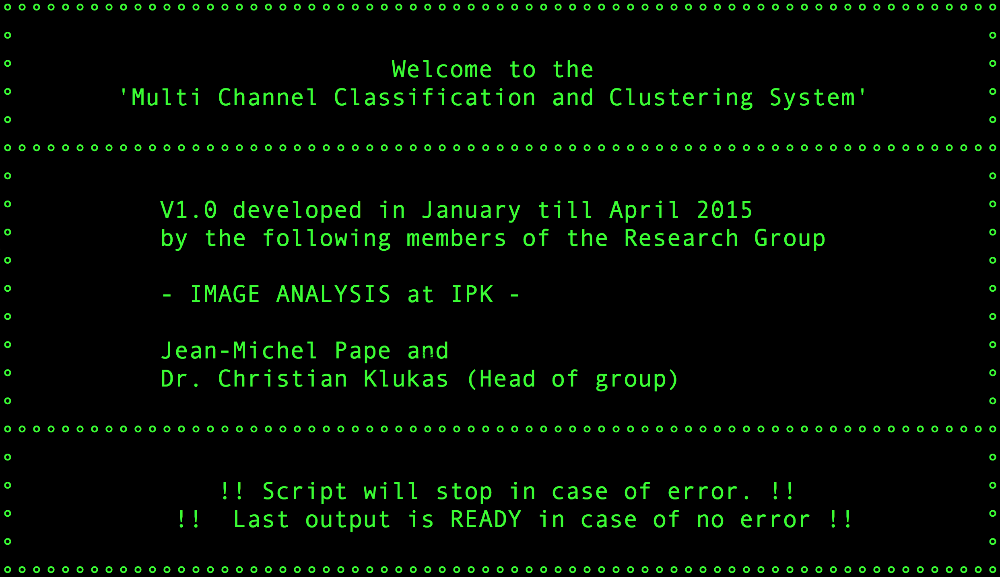

Welcome to MCCCS!
|-|-| |Here we present an image-based Multi Channel Classification and Clustering System (MCCCS). It is a generalized, script-based classification system for processing various kinds of image data. Due to the modular design, individual processing-components can be easily adapted, extended or exchanged by other external commands. The system includes pipeline examples for solving different segmentation, classification and clustering problems. For solving these various tasks we are utilizing common machine learning approaches. The conversion of image pixel data to the common ARFF file format encouraged the usage of a wide variety of classification frameworks.|  |
MCCCS is a system utilizing machine learning techniques for image processing and image analysis.
About
Multi Channel Classification and Clustering System
Developed in 2015 at IPK Gatersleben by the Research Group Image Analysis
Developed from 2015-2016 in collaboration by Jean-Michel Pape and Christian Klukas
Development of the presented methods has been performed with equal contribution by:
Jean-Michel Pape - Method development, implementation and documentation.
and
Dr. Christian Klukas - Supervision of project, method development and implementation - head of group 'Image Analysis' at IPK during the development and from 2010 to April 2015
The system is mainly characterized by:
The system is generalized to handle a diverse set of input data, RGB images and multi-channel (hyper-spectral) datasets as well.
The system includes different approaches for image feature extraction (color and texture).
It is able to solve different classification problems by using supervised and un-supervised machine learning methods provided by exchangeable libraries.
It includes methods for handling multi-channel data to solve multi-label classification problems in an efficient way.
Due to its modular Bash-script-based design, it is also easily adaptable and extensible by using common image processing, machine learning libraries or own algorithms.
Implementation
The software is implemented as a set of Bash scripts which have been tested under Linux, Mac and Windows.
The provided commands are mainly implemented using the JAVA (Version 1.8) programming language, due to the advantage of its platform independence and broad support of different libraries and toolboxes like WEKA and ImageJ.
Acknowledgments for funding
This work was supported by IPK institute funds and project funding of the Federal Ministry of Education and Research (BMBF) (DPPN: 031A053B).